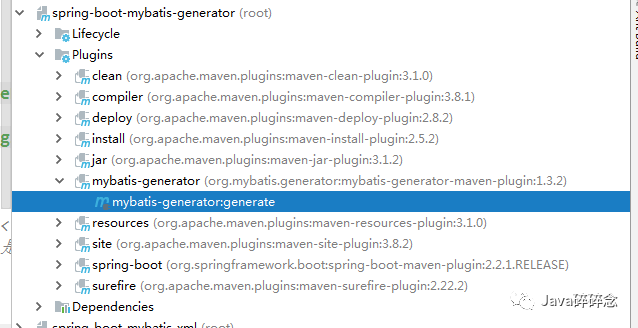
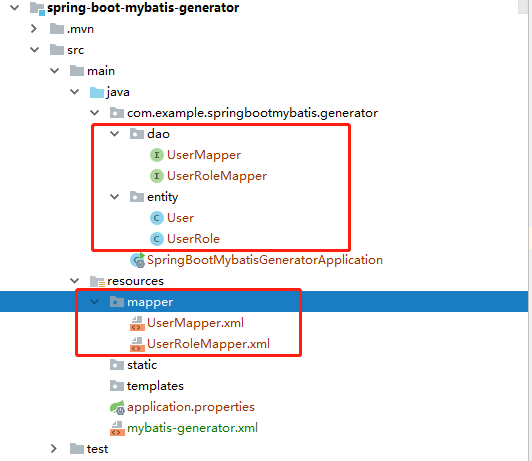

原文连接:https://www.cnblogs.com/haha12/p/11867386.html
目录
之前的文章《SpringBoot系列-整合Mybatis（XML配置方式）》介绍了XML配置方式整合的过程，本文介绍下利用Mybatis-generator生成xml、dao、entity的过程。
一、MyBatis Generator简介
MyBatis Generator是MyBatis官方提供的代码生成器，可以生成xml、dao、entity。
官网介绍见：http://mybatis.org/generator/
二、使用方式
MyBatis Generator的使用方式有4种：
- 命令行生成
- Maven方式生成
- 使用Ant任务生成
- 使用Java代码生成
本文将使用Intel IDEA+Maven方式生成代码，因为集成和使用比较简单，配置完成后直接双击运行即可。
三、实战
首先新建一个SpringBoot项目spring-mybatis-generator，然后按照下面步骤操作。
- pom.xml中配置plugin
<!-- 引入mybatis-generator 插件 -->
<plugin>
<groupId>org.mybatis.generator</groupId>
<artifactId>mybatis-generator-maven-plugin</artifactId>
<version>1.3.2</version>
<configuration>
<!-- mybatis-generator的配置文件，根据情况调整位置 -->
<configurationFile>src/main/resources/mybatis-generator.xml</configurationFile>
<verbose>true</verbose>
<overwrite>true</overwrite>
</configuration>
<executions>
<execution>
<id>Generate MyBatis Artifacts</id>
<goals>
<goal>generate</goal>
</goals>
</execution>
</executions>
<dependencies>
<dependency>
<groupId>org.mybatis.generator</groupId>
<artifactId>mybatis-generator-core</artifactId>
<version>1.3.2</version>
</dependency>
</dependencies>
</plugin>- 修改mybatis-generator.xml文件
上一步pom.xml中指定了一个配置文件，所以在resources目录下新建mybatis-generator.xml，MyBatis Generator通过这个配置文件才可以进行如下操作：
- 如何连接到数据库
- 生成什么对象，以及如何生成它们
- 哪些表应用于对象生成
完整内容下面会有，需要注意的是。
JDBC驱动jar的路径一定要写绝对路径。
JDBC驱动jar的路径一定要写绝对路径。
JDBC驱动jar的路径一定要写绝对路径。
重要的事情说3遍。
mybatis-generator.xml完整内容如下：
<?xml version="1.0" encoding="UTF-8"?>
<!DOCTYPE generatorConfiguration
PUBLIC "-//mybatis.org//DTD MyBatis Generator Configuration 1.0//EN"
"http://mybatis.org/dtd/mybatis-generator-config_1_0.dtd">
<generatorConfiguration>
<!--JDBC驱动jar包的 绝对路径 -->
<!--JDBC驱动jar包的 绝对路径 -->
<!--JDBC驱动jar包的 绝对路径 -->
<classPathEntry location="C:\Users\java_suisui\.m2\repository\mysql\mysql-connector-java\5.1.39\mysql-connector-java-5.1.39.jar"/>
<!--defaultModelType="flat" 大数据字段，不分表 -->
<context id="Mysql" targetRuntime="MyBatis3Simple" defaultModelType="flat">
<property name="autoDelimitKeywords" value="true" />
<property name="beginningDelimiter" value="`" />
<property name="endingDelimiter" value="`" />
<property name="javaFileEncoding" value="utf-8" />
<plugin type="org.mybatis.generator.plugins.SerializablePlugin" />
<plugin type="org.mybatis.generator.plugins.ToStringPlugin" />
<!-- 注释 -->
<commentGenerator >
<property name="suppressAllComments" value="true"/><!-- 是否取消注释 -->
<property name="suppressDate" value="true" /> <!-- 是否生成注释代时间戳-->
</commentGenerator>
<!--数据库链接地址账号密码-->
<jdbcConnection driverClass="com.mysql.jdbc.Driver"
connectionURL="jdbc:mysql://localhost:3306/demo"
userId="root"
password="123456">
</jdbcConnection>
<!-- 类型转换 -->
<javaTypeResolver>
<!-- 是否使用bigDecimal， false可自动转化以下类型（Long, Integer, Short, etc.） -->
<property name="forceBigDecimals" value="false"/>
</javaTypeResolver>
<!--生成Model类存放位置-->
<javaModelGenerator targetPackage="com.example.springbootmybatis.generator.entity" targetProject="src/main/java">
<property name="enableSubPackages" value="true"/>
<property name="trimStrings" value="true"/>
</javaModelGenerator>
<!-- 生成mapxml文件 -->
<sqlMapGenerator targetPackage="mapper" targetProject="src/main/resources" >
<property name="enableSubPackages" value="false" />
</sqlMapGenerator>
<!-- 生成mapxml对应client，也就是接口dao -->
<javaClientGenerator targetPackage="com.example.springbootmybatis.generator.dao" targetProject="src/main/java" type="XMLMAPPER" >
<property name="enableSubPackages" value="false" />
</javaClientGenerator>
<table tableName="user" enableCountByExample="true" enableUpdateByExample="true" enableDeleteByExample="true" enableSelectByExample="true" selectByExampleQueryId="true">
<generatedKey column="id" sqlStatement="Mysql" identity="true" />
</table>
<table tableName="user_role" enableCountByExample="true" enableUpdateByExample="true" enableDeleteByExample="true" enableSelectByExample="true" selectByExampleQueryId="true">
<generatedKey column="id" sqlStatement="Mysql" identity="true" />
</table>
</context>
</generatorConfiguration>- 生成代码
点击IntelIDEA右侧的“Maven Projects”，找到spring-boot-mybatis-generator下面的mybatis-generator:generate，双击运行，日志中出现“BUILD SUCCESS”说明代码已生成。
运行截图：

生成代码截图：

运行日志：
[INFO] Scanning for projects...
[INFO]
[INFO] ------------------------------------------------------------------------
[INFO] Building spring-boot-mybatis-generator 0.0.1-SNAPSHOT
[INFO] ------------------------------------------------------------------------
[INFO]
[INFO] --- mybatis-generator-maven-plugin:1.3.2:generate (default-cli) @ spring-mybatis-generator ---
[INFO] Connecting to the Database
[INFO] Introspecting table user
log4j:WARN No appenders could be found for logger (org.mybatis.generator.internal.db.DatabaseIntrospector).
log4j:WARN Please initialize the log4j system properly.
log4j:WARN See http://logging.apache.org/log4j/1.2/faq.html#noconfig for more info.
[INFO] Introspecting table user_role
[INFO] Generating Record class for table user
[INFO] Generating Mapper Interface for table user
[INFO] Generating SQL Map for table user
[INFO] Generating Record class for table user_role
[INFO] Generating Mapper Interface for table user_role
[INFO] Generating SQL Map for table user_role
[INFO] Saving file UserMapper.xml
[INFO] Saving file UserRoleMapper.xml
[INFO] Saving file User.java
[INFO] Saving file UserMapper.java
[INFO] Saving file UserRole.java
[INFO] Saving file UserRoleMapper.java
[INFO] ------------------------------------------------------------------------
[INFO] BUILD SUCCESS
[INFO] ------------------------------------------------------------------------到此利用mybatis-generator自动生成代码已经全部介绍完成了，有问题欢迎留言沟通哦！
完整源码地址： https://github.com/suisui2019/springboot-study
推荐阅读
1.手把手带你实战下Spring的七种事务传播行为
2.SpringBoot系列-整合Mybatis（注解方式）
3.SpringBoot系列-整合Mybatis（XML配置方式）
限时领取免费Java相关资料，涵盖了Java、Redis、MongoDB、MySQL、Zookeeper、Spring Cloud、Dubbo/Kafka、Hadoop、Hbase、Flink等高并发分布式、大数据、机器学习等技术。
关注下方公众号即可免费领取：

本文由博客一文多发平台 OpenWrite 发布！